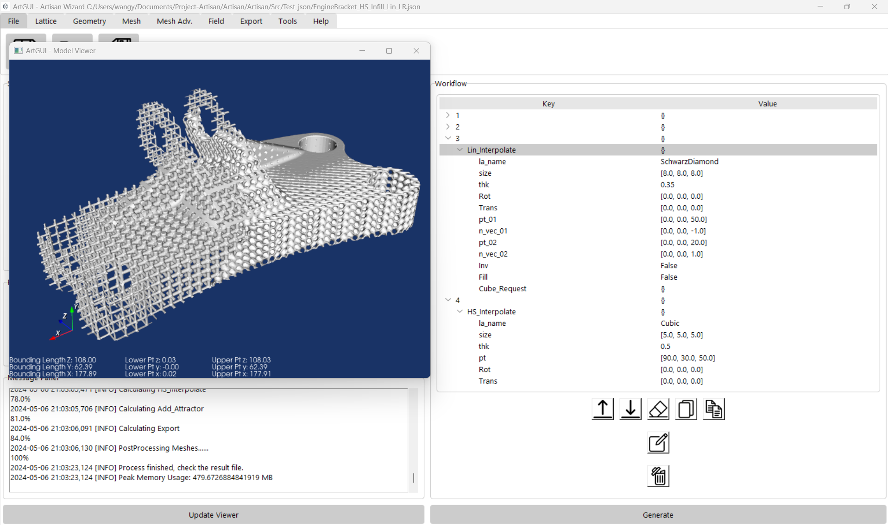

ArtGUI#
ArtGUI is an intuitive graphical user interface designed to streamline the Artisan design workflow. Users can load their design file, i.e. JSON configuration, and perform editing, generation, and viewing of lattice structures all within a single application. ArtGUI emphasizes a user-friendly interface, catering to essential tasks while maintaining overall simplicity. For more complex mesh and geometric operations, users may need to utilize a professional CAD system. In future, we will gradually expand ArtGUI’s functions and applications. We use a simple example below to guide user how to interact with this application.
This is the documentation for ArtGUI version 0.0.2.
Launch Application#
User may launch the application just type the following:
python ArtGUI.py
In the all-in-one standalone package, user may activate the ArtGUI by double clicking ArtGUI.exe.
Overview#
The graphic below shows an overall view of the application. The interface includes five functional areas, the ribbon-style tool bar, setup, workflow, post process and the message panel. Each of section corresponds to JSON configuration of the file. User may able to enter the setup, workflow and post process sections, and save to a standard JSON configuration, or just uses the top tool bar to insert the keywords, or editing the definition files.
In general, the GUI’s main areas are:
Area |
Details |
|---|---|
Ribbon Tool Bar |
It contains File operation, and keywords insert functions. User may insert keywords by click the corresponding buttons. The tool tab provides the mini editor for mesh lattice, conformal lattice and customer lattice definition files. User shall edit, and save the definition files here, and refer to these files in the workflow. |
Main WorkFlow Editor |
User may change the keywords parameters or work flow orders in the editor, or directly edit the JSON here. |
Environment setup and results monitoring |
Setup basic computational Environment parameter, and monitoring the progress of the computation, use the update viewer button to view the results. |
Basic Work flow should be as following. * load, or construct the setup parameters and the work flow; * Generate the lattice, and check results; * iteratively generate the results which meets the requirements.
Load, Edit and Save#
On the top, user shall find the file tab that includes Save, Save as and Load. Click the load, then navigate to the Test_json folder, where many examples were stored, find a configuration file and load it. Here we pick up Test_json\EngineBracket_HS_Infill_Lin_LR.txt, as shown below. The ArtGUI will parse the given JSON file, fill the setup, post-process sections, and load the workflow text into the workflow section. Each item in the workflow will be presented as tree view, by expanding the treeview, user can navigate through all parameters and values. For editing the values or keys, just clicking the item.
Or use the editor button at the bottom section to editing original JSON file, and do not forgot the click refresh button to update back to the treeview GUI.
Please note that, in the JSON editor, the JSON format is enforced in the text panel, after key in the items, and press enter it will automatically apply highlight and indentation in order to improve readability. If any editing has done, user has to save it, may click the generate button under the workflow panel. ArtGUI shall trigger the Artisan backend to work. In this case we just would like to give the example file a run, so hit the generate button. Then you shall see the computational progress message on the message panel.
The top ribbon offers a toolbar with multiple keyword buttons, enabling users to easily insert JSON snippets by simply clicking the appropriate keyword button. Please remember to edit the step number, which defaults to either 9999 or 10000. This step number should reflect the sequencies of the design steps. Other parameters should also be reviewed and adjusted to ensure they align with the intended values. Users can leverage the functions available under the “Tools” tab to edit mesh lattices, conformal lattices, or define custom lattice structures. A mini tree view editor will pop up, pre-loaded with the appropriate template, allowing for seamless customization.
Users can copy and paste JSON strings directly into the tree view area. This can be done by using the bottom buttons or by right-clicking to reveal the context menu. ArtGUI will then automatically parse the JSON string into the appropriate format.
Generate and View Model#
After editing is complete, clicking the “Generate” button initiates the backend computation. Users can monitor the progress in the message panel. Once the computation is finished, clicking the “View Model” button opens the viewport screen. Here, users can rotate, pan, or zoom in and out to inspect the results.
User may change the design parameters in the workflow, and re-generate a new lattice result, just click the update view, the new result should be updated in the view port. At the bottom of the view port, user shall be able to see the bounding lengths, and the lower point and upper point of the bounding box. Please note that, if the JSON workflow last line does not contain the keywords Export and did not give a result file, the view port will not be updated.
Note
The edited JSON must be saved before generating. Artisan at the backend only read the JSON and conduct the calculation, and will not have interaction with ArtGUI.
Help#
The help menu provides an easy access to the Artisan’s online manual.